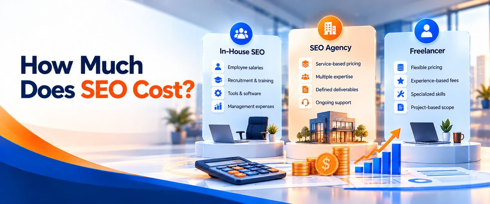

Search engine optimization (SEO) has become an essential part of digital marketing for businesses that want to increase website traffic, improve online visibility, and generate qualified leads. However, one important question often arises when planning an SEO strategy: Should you hire an in-house SEO team, work with an SEO agency, or hire a freelance SEO specialist?
Each option has its advantages, limitations, and cost considerations. The right choice depends on your business goals, available budget, website requirements, competition, and long-term growth plans.
For startups, small businesses, and growing companies, choosing the right SEO partner can make a significant difference in how effectively their marketing resources are used.
At Infinyx Global, we help businesses strengthen their digital presence through SEO, Answer Engine Optimization (AEO), Generative Engine Optimization (GEO), content development, website optimization, and digital marketing support. In this guide, we compare in-house SEO teams, SEO agencies, and freelancers to help you make an informed decision.
What Is In-House SEO?
In-house SEO means hiring employees who work directly for your company and manage your search engine optimization activities.
An in-house SEO professional may handle keyword research, on-page optimization, off-page optimization, content planning, technical SEO, performance reporting, and coordination with other internal departments.
Larger companies may build a complete team consisting of SEO specialists, content writers, designers, developers, analysts, and digital marketing managers.
Advantages of an In-House SEO Team
1. Better understanding of your business
Internal employees can develop a deep understanding of your products, services, customers, and business objectives. This knowledge can help them create more relevant SEO strategies.
2. Direct communication
Because the team works within your organization, communication with sales, product, marketing, and leadership teams can be easier.
3. Greater control over priorities
You can assign tasks, change priorities, and coordinate SEO activities according to your business requirements.
4. Long-term knowledge retention
An in-house team can retain institutional knowledge about your website, customers, competitors, and previous marketing campaigns.
Disadvantages of In-House SEO
Building an internal team can be expensive. Salaries, recruitment, training, SEO tools, and other operational expenses can increase your marketing costs.
Another challenge is skill coverage. SEO includes technical optimization, content strategy, website development, link building, analytics, and conversion optimization. One employee may not have expertise in every area, so you may need several specialists.
In-house SEO is often suitable for larger organizations with consistent workloads, dedicated budgets, and a need for continuous internal collaboration.
What Is an SEO Agency?
An SEO agency is a company that provides professional search engine optimization services to other businesses. Depending on the engagement, an agency may manage your complete SEO strategy or support selected activities.
A professional SEO agency can bring together specialists in technical SEO, keyword research, content writing, web development, digital PR, link building, and analytics.
Advantages of Hiring an SEO Agency
- Access to multiple specialists
Instead of relying on one employee, you can access a team with different skills. This is particularly useful when your website needs technical improvements, content creation, landing pages, and ongoing optimization.
- A comprehensive SEO strategy
An experienced SEO agency Bangalore can coordinate keyword research, website structure, content development, technical improvements, and authority-building activities under one plan.
- Scalable services
Businesses can adjust the scope of their SEO engagement as their needs change. For example, a company may begin with a website audit and later expand into content marketing, international SEO, or ongoing optimization.
- Access to tools and processes
Agencies often use professional SEO tools, reporting systems, and established workflows to monitor performance and identify opportunities.
- Support beyond traditional SEO
Some agencies also offer content marketing, conversion optimization, website development, AEO, and GEO services, helping businesses coordinate different digital growth activities.
Disadvantages of Hiring an SEO Agency
Agency costs vary depending on the scope of work, competition, website complexity, and expertise required.
Communication can also become challenging if responsibilities are unclear or reporting is inconsistent. Some agencies manage multiple clients, so businesses should confirm who will work on their account and how often progress will be reviewed.
Before hiring an agency, review its proposed strategy, deliverables, communication process, and measurement approach. Avoid providers that promise guaranteed Google rankings.
Who Should Hire an SEO Agency?
An SEO agency is often a strong choice for businesses that need several SEO capabilities but do not want to recruit and manage an entire internal team.
Startups, B2B companies, e-commerce businesses, professional service providers, and companies entering new markets may benefit from an agency’s combined expertise.
If your business is searching for an SEO Company in Bangalore, evaluate potential partners based on their technical capabilities, content quality, transparency, and ability to connect SEO activities with business goals.
What Is a Freelance SEO Specialist?
A freelance SEO specialist is an independent professional who provides SEO services to businesses on a project, hourly, or retainer basis.
Freelancers may specialize in technical SEO, keyword research, on-page optimization, content strategy, local SEO, or link building. Their expertise and service scope can differ considerably.
Advantages of Hiring an SEO Freelancer
- Flexible engagement
Freelancers can be suitable for specific projects, such as conducting a website audit, researching keywords, optimizing service pages, or developing an SEO strategy.
- Direct communication
You generally communicate directly with the person completing the work, which can simplify discussions and feedback.
- Potentially lower costs
Freelancers may have lower overheads than agencies, making them attractive to startups and small businesses with limited budgets.
- Specialized expertise
Some freelancers have extensive experience in a particular SEO discipline. This can be valuable when you need help with a well-defined technical or strategic challenge.
Disadvantages of Hiring a Freelancer
One freelancer may not have the time or skills to manage every aspect of a complex SEO campaign.
For example, a business may need web development, content writing, technical testing, visual design, and backlink outreach simultaneously. A freelancer may need to outsource some of these activities or coordinate with your internal team.
Availability can also be a concern if the freelancer manages several clients. Before hiring, clarify project timelines, deliverables, communication expectations, and what happens if additional work is required.
When Should You Hire a Freelancer?
A freelancer may be the right choice when you have a clearly defined SEO requirement, a small website, a limited budget, or an existing marketing team that can implement recommendations.
If you need only an SEO audit or help improving a handful of landing pages, hiring a specialist may be more practical than engaging a full-service agency.
In-House SEO vs Agency vs Freelancer: Key Differences
The following comparison can help you evaluate the three models.
| Factor | In-House SEO | SEO Agency | Freelancer |
|---|---|---|---|
| Cost structure | Salaries and operating costs | Service fees or retainers | Hourly, project, or retainer fees |
| Skill coverage | Depends on the employees hired | Access to multiple specialists | Depends on individual expertise |
| Business knowledge | Usually develops deeply over time | Requires onboarding and collaboration | Requires onboarding and collaboration |
| Scalability | May require additional recruitment | Scope can often be adjusted | Depends on availability |
| Management | Managed internally | Shared through an agreed process | Direct coordination |
| Best suited for | Companies with ongoing internal SEO needs | Businesses needing coordinated expertise | Specific tasks and smaller projects |
There is no universal winner. Your choice should reflect the amount of work required and the resources available to complete it effectively.
How Much Does SEO Cost?

The cost of SEO depends on your website, industry, competition, target markets, and the amount of work involved.
In-house SEO includes employee salaries, recruitment, training, tools, and management expenses. Agency pricing depends on the services and deliverables included in the agreement. Freelancer fees depend on experience, specialization, and project scope.
Rather than choosing solely based on price, consider the overall value of the engagement.
Ask potential providers:
- What deliverables are included in the monthly fee?
- Will you receive technical SEO, content, and reporting support?
- Are website development and implementation included?
- How will keyword opportunities be prioritized?
- How will progress and conversions be measured?
- Are third-party tools or additional services charged separately?
A clear scope of work helps you compare providers fairly and reduces the risk of unexpected costs.
Why Infinyx Global Is a Strong Option for Businesses
At Infinyx Global, we understand that businesses need more than keyword rankings. They need a website that communicates their value, attracts relevant audiences, and supports measurable business objectives.
We provide SEO, AEO, and GEO services across the globe, helping businesses improve their digital presence and adapt to changing search experiences.
Our in-house capabilities include designers, developers, testers, content writers, and backlink specialists. This allows us to coordinate website creation, technical implementation, content development, quality checks, and promotion through a connected workflow.
- Website Pages Built From Scratch
If you are launching a new website or introducing new services, our team can build web pages from scratch with SEO requirements incorporated into the planning process.
This can include keyword research, content structure, headings, metadata, internal linking, user experience, technical considerations, and calls to action.
- Existing Pages Converted Into SEO-Friendly Pages
If your website already exists, we can review its pages and identify opportunities for improvement.
Depending on the audit findings, we can improve page content, headings, URLs, metadata, internal links, mobile usability, and technical SEO elements. Once the agreed changes are implemented, we can begin ongoing optimization and promotion activities.
- Content and Backlink Support
Our content writers develop relevant website copy and blog content based on your target audience and search intent. Our backlink team works on relevant outreach and link-building opportunities to help strengthen your website’s authority.
The focus is on useful content and relevant links rather than keyword stuffing or manipulative link schemes.
- SEO, AEO, and GEO Under One Strategy
Search behavior continues to evolve. In addition to traditional SEO, we help businesses structure content for answer-focused search experiences and generative AI discovery.
Our approach brings technical foundations, content quality, brand information, and ongoing optimization together to support a broader search visibility strategy.
- Services for Local and Global Markets
Whether you want to reach customers in Bangalore, expand across India, or target international audiences, we can help develop a strategy suited to your business goals.
Businesses searching for SEO Services in Bangalore, an SEO Agency Bangalore, or a partner for international search optimization can evaluate Infinyx Global based on their required services, target markets, and implementation needs.
How to Choose the Right SEO Partner
Before deciding between an internal team, agency, or freelancer, follow these steps:
Step 1: Define your goals. Decide whether you want more organic traffic, qualified leads, online sales, local visibility, or international expansion.
Step 2: Assess your website. Identify technical problems, missing pages, weak content, and opportunities to improve conversions.
Step 3: Evaluate your resources. Consider your budget, internal expertise, implementation capacity, and expected workload.
Step 4: Compare capabilities. Look beyond price and check whether the provider can handle the specific activities your website needs.
Step 5: Set measurable expectations. Agree on deliverables, reporting, communication, and business-relevant performance indicators.
Step 6: Review and improve. SEO requires continuous monitoring, testing, and refinement. Review performance regularly and adjust the strategy as your business evolves.
Conclusion
Choosing between in-house SEO, an SEO agency, and a freelancer depends on your goals, budget, workload, and access to expertise.
An in-house team offers close integration with your business. A freelancer can provide focused specialist support. An agency can coordinate multiple capabilities under one strategy.
For businesses that need website development, SEO-friendly pages, content creation, technical implementation, and ongoing promotion, Infinyx Global offers an integrated approach to digital growth.
From building pages from scratch to optimizing existing websites and implementing SEO, AEO, and GEO strategies, our goal is to help businesses improve their online presence and reach relevant audiences across the globe.
Infinyx Global — Your Growth Partner in the Digital World.
Visit https://www.infinyxglobal.com/ to learn more about our services and discuss your business goals.